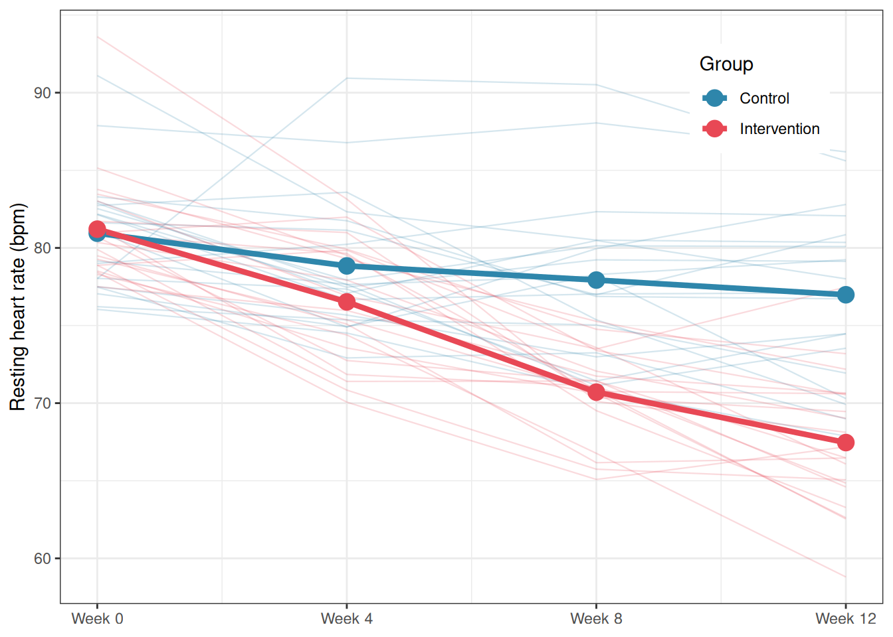

In every design considered so far, each experimental unit, each plant, each patient, each plot, contributed a single observation to the analysis. The treatment groups were independent: knowing the yield of one plant told you nothing about the yield of any other. This is the between-subjects, or independent groups, structure that one-way and two-way ANOVA are built for.
Many biological questions, however, require measuring the same individual repeatedly. How does a patient’s blood pressure change over eight weeks of treatment? How does a mouse’s body weight evolve across a dietary intervention? How does soil respiration in a plot respond to successive rainfall events? In all of these cases, the observations are not independent. Measurements taken on the same individual at different time points will resemble each other more than measurements taken from different individuals, simply because individuals differ from one another in stable, persistent ways.
Repeated measures ANOVA is designed for exactly this structure. It acknowledges that the same individual is measured multiple times, explicitly models the between-individual variation, and in doing so gains considerable statistical power compared to a between-subjects design of the same total size. It also introduces a new assumption, sphericity, that is frequently violated and even more frequently ignored.
6.1 Within-Subject Designs: Rationale and Structure
6.1.1 The Logic of Repeated Measures
The fundamental advantage of a repeated measures design is that each individual serves as their own control.
Consider measuring blood pressure at four time points in 20 patients. The total variation in the data has two sources: variation between patients (some people have naturally higher blood pressure than others, regardless of treatment) and variation within patients over time (the change in each person’s blood pressure across the four measurements).
Between-subjects ANOVA cannot separate these two sources, it pools them into the error term. Repeated measures ANOVA partitions them explicitly. The between-patient variation is removed from the error term and accounted for separately, leaving a much smaller residual against which the within-subject effect of time is tested. This is why repeated measures designs are statistically efficient: the between-subject noise that would otherwise obscure the treatment effect is factored out entirely.
This efficiency comes with a responsibility: the non-independence of repeated observations must be modelled correctly, not ignored.
6.1.2 The Design Structure
In a one-way repeated measures design, \(n\) subjects each provide measurements under all \(k\) conditions (or at all \(k\) time points). The design can be represented as a two-way table with subjects as rows and conditions as columns, where every cell contains exactly one observation:
where \(\alpha_i\) is the effect of condition \(i\) (the within-subject factor), \(\pi_j\) is the effect of subject \(j\) (the between-subject random effect, capturing stable individual differences), and \(\varepsilon_{ij}\) is the residual. The key point is that \(\pi_j\) is estimated and removed before testing \(\alpha_i\): this is the partitioning that gives repeated measures its power advantage.
6.1.3 Between-Subjects vs Within-Subjects Factors
Not all factors in a repeated measures design need to be within-subject. In a mixed design (not to be confused with mixed-effects models, though the connection is real), some factors are between-subjects and some are within-subjects. For example:
Between-subjects factor: treatment group (patients are assigned to either drug or placebo, they cannot be in both).
Within-subjects factor: time (all patients are measured at baseline, week 4, and week 8).
This is the most common structure in clinical biology: a treatment group factor (between) crossed with a time factor (within). The analysis produces three tests: the main effect of group, the main effect of time, and the group-by-time interaction, the last being typically the most scientifically interesting, as it tests whether the trajectory of change over time differs between treatment groups.
6.1.4 When to Use Repeated Measures ANOVA
Repeated measures ANOVA is appropriate when:
The same individual is measured at multiple time points or under multiple conditions.
The order of conditions is either randomised (crossover design) or irrelevant to the research question (longitudinal time course).
The number of repeated measurements is modest (roughly 2-6). With many time points, linear mixed models (Chapter sec-chap9) are more flexible and generally preferable.
The assumption of sphericity (Section sec-sphericity) is either satisfied or corrected for.
It is not appropriate when:
The repeated measurements are pseudoreplicates: multiple measurements of the same individual that were never intended to capture genuine within-individual change (see Section sec-pseudoreplication).
The dropout rate is substantial: repeated measures ANOVA requires complete data, and list-wise deletion of incomplete cases can introduce serious bias. Mixed models handle missing data more gracefully.
6.2 Sphericity: The Forgotten Assumption
6.2.1 What Is Sphericity?
Sphericity is the assumption specific to repeated measures ANOVA, and it is the one most routinely overlooked. Understanding it requires first understanding what the repeated measures F test is actually doing.
In a between-subjects one-way ANOVA, the single error term, \(MS_{\text{within}}\), is appropriate because all observations in the same group were collected independently, and the variance is assumed equal across groups (homoscedasticity). In repeated measures ANOVA, the single within-subject error term is appropriate only if a stronger condition holds: not only must the variances of the repeated measurements be equal across time points, but the covariances between every pair of time points must also be equal.
More precisely, the assumption requires that the variance of the differences between every pair of time points is the same. If you have four time points, there are \(\binom{4}{2} = 6\) pairwise differences, and sphericity requires all six to have equal variance.
This is called the sphericity assumption (also known as the Huynh-Feldt condition), and it is a generalisation of the compound symmetry assumption. Compound symmetry, equal variances and equal covariances everywhere, implies sphericity, but sphericity is weaker: it can hold even when compound symmetry does not.
6.2.2 Why Does Violation Matter?
When sphericity is violated, the F test in repeated measures ANOVA becomes positively biased: it produces too many significant results. The degrees of freedom used to construct the reference F distribution are inflated, making the test anti-conservative. The simulation below demonstrates this:
library(future)library(furrr)library(purrr)plan(multisession)set.seed(42)n_sim<-5000alpha<-0.05n<-20# subjectsk<-4# time points# Function to simulate one dataset and return p-value# from standard repeated measures ANOVA (via aov with Error term)run_rm_anova<-function(sigma_matrix){library(MASS)# Simulate data with given covariance structureY<-mvrnorm(n, mu =rep(0, k), Sigma =sigma_matrix)df_long<-data.frame( y =as.vector(t(Y)), subject =factor(rep(1:n, each =k)), time =factor(rep(1:k, n)))fit<-aov(y~time+Error(subject/time), data =df_long)summary(fit)$`Error: subject:time`[[1]][["Pr(>F)"]][1]}# Sphericity satisfied: compound symmetrysigma_cs<-matrix(0.5, k, k)diag(sigma_cs)<-1# Sphericity violated: variance increases with timesigma_het<-diag(c(1, 2, 4, 8))sigma_het[sigma_het==0]<-0.5p_sphere<-future_map_dbl(seq_len(n_sim), ~run_rm_anova(sigma_cs), .options =furrr_options(seed =TRUE))p_nospher<-future_map_dbl(seq_len(n_sim), ~run_rm_anova(sigma_het), .options =furrr_options(seed =TRUE))plan(sequential)cat("False positive rate (sphericity satisfied):",round(mean(p_sphere<alpha, na.rm =TRUE), 3),"\nFalse positive rate (sphericity violated):",round(mean(p_nospher<alpha, na.rm =TRUE), 3), "\n")
The false positive rate under sphericity violation is above 5%, confirming that the standard \(F\) test cannot be trusted when the assumption fails.
6.2.3 Mauchly’s Test
Mauchly’s test is the standard formal test of the sphericity assumption. It tests the null hypothesis that the variance-covariance matrix of the repeated measurements has the sphericity property.
# Mauchly's test is produced automatically by summary()# when using the idata / mauchly argument in car::Anovalibrary(car)# Fit the model as a multivariate linear model first# (required for Mauchly's test via car)fit_mlm<-lm(cbind(t1, t2, t3, t4)~1, data =df_wide)idata<-data.frame(time =factor(1:k))rm_model<-Anova(fit_mlm, idata =idata, idesign =~time, type ="III")summary(rm_model, multivariate =FALSE)# Mauchly's test and epsilon corrections appear automatically
Mauchly’s test shares the same sample-size sensitivity as the Shapiro-Wilk and Levene tests discussed in Chapter 2. With small samples it has low power to detect real violations; with large samples it will flag trivially small departures. As always, the test result should inform your judgement rather than make the decision for you. With \(k \geq 3\) time points and any doubt about sphericity, apply the corrections described below regardless of the Mauchly test outcome.
6.2.4\(\varepsilon\) Corrections
When sphericity is violated, or when you cannot confidently rule out a violation, the appropriate response is to adjust the degrees of freedom of the F test using an epsilon (\(\varepsilon\)) correction. The correction factor \(\varepsilon\) (\(0 < \varepsilon \leq 1\)) measures the degree of departure from sphericity: \(\varepsilon = 1\) means perfect sphericity; smaller values indicate greater violation.
Two estimators of \(\varepsilon\) are in common use.
Greenhouse-Geisser (\(\hat{\varepsilon}_{GG}\)): a conservative estimator that can be very low when sphericity is badly violated. It tends to overcorrect with small samples, making the test too conservative.
Huynh-Feldt (\(\tilde{\varepsilon}_{HF}\)): a less conservative estimator that performs better in small to moderate samples. It is capped at 1: if the estimate exceeds 1, it is set to 1.
The conventional guidance is:
If \(\hat{\varepsilon}_{GG} > 0.75\): use Huynh-Feldt.
If \(\hat{\varepsilon}_{GG} \leq 0.75\): use Greenhouse-Geisser.
If \(\hat{\varepsilon}_{GG}\) is very low (< 0.5): consider a multivariate approach (MANOVA) or a linear mixed model instead.
Both corrections are produced automatically by car::Anova() with the multivariate = FALSE option, as shown in the example below.
6.3 One-Way and Two-Way Repeated Measures in R
6.3.1 One-Way Repeated Measures
The simplest case: one within-subject factor (e.g. time) and no between-subject factor. In base R, the Error() term in aov() specifies the within-subject structure:
# Long format required# subject: factor identifying each individual# time: within-subject factor# y: response variablefit_rm<-aov(y~time+Error(subject/time), data =df_long)summary(fit_rm)
For Mauchly’s test and epsilon corrections, the car package approach is more complete:
library(car)# Reshape to wide format for car::Anova# Each row is one subject; columns are time pointsfit_mlm<-lm(cbind(t1, t2, t3, t4)~1, data =df_wide)idata<-data.frame(time =factor(1:4))rm_model<-Anova(fit_mlm, idata =idata, idesign =~time, type ="III")# Full output including Mauchly's test and epsilon correctionssummary(rm_model, multivariate =FALSE)
6.3.2 Two-Way Repeated Measures (Mixed Design)
The most common design in clinical biology: one between-subjects factor (group) and one within-subjects factor (time):
# group: between-subjects factor (different patients in each group)# time: within-subjects factor (all patients measured at each time)# subject: factor identifying each individualfit_mixed<-aov(y~group*time+Error(subject/time), data =df_long)summary(fit_mixed)
For the car approach with epsilon corrections in a mixed design:
library(car)fit_mlm2<-lm(cbind(t1, t2, t3, t4)~group, data =df_wide)idata<-data.frame(time =factor(1:4))rm_model2<-Anova(fit_mlm2, idata =idata, idesign =~time, type ="III")summary(rm_model2, multivariate =FALSE)
6.4 Example: Longitudinal Measurements in Clinical Biology
6.4.1 The Study
A clinical trial follows 40 patients recovering from cardiac surgery. Twenty patients are randomly assigned to a standard rehabilitation programme (group level Control) and twenty to an intensive cardiac rehabilitation programme (group level Intervention) (sec-cardiac-recovery). Resting heart rate (hr, beats per minute) is measured at four time points (time): baseline (week 0), week 4, week 8, and week 12. The primary question is whether the two groups differ in their trajectory of heart rate reduction over the 12-week period that is, whether there is a group-by-time interaction.
#> subject group time hr id
#> 1 : 4 Control :80 0 :40 Min. :58.80 Min. : 1.00
#> 2 : 4 Intervention:80 4 :40 1st Qu.:71.66 1st Qu.:10.75
#> 3 : 4 8 :40 Median :77.09 Median :20.50
#> 4 : 4 12:40 Mean :76.32 Mean :20.50
#> 5 : 4 3rd Qu.:80.38 3rd Qu.:30.25
#> 6 : 4 Max. :93.61 Max. :40.00
#> (Other):136
6.4.2 Visualising the Data
library(ggplot2)# Group means per time pointsumm<-aggregate(hr~group+time, data =cardiac_recovery, FUN =mean)summ$time_num<-as.numeric(as.character(summ$time))cardiac_recovery$time_num<-as.numeric(as.character(cardiac_recovery$time))ggplot()+# Individual trajectoriesgeom_line(data =cardiac_recovery, aes(x =time_num, y =hr, group =subject, colour =group), alpha =0.2, linewidth =0.4)+# Group mean trajectoriesgeom_line(data =summ, aes(x =time_num, y =hr, colour =group, group =group), linewidth =1.5)+geom_point(data =summ, aes(x =time_num, y =hr, colour =group), size =4)+scale_colour_manual(values =c("#2E86AB", "#E84855"))+scale_x_continuous(breaks =c(0, 4, 8, 12), labels =paste0("Week ", c(0, 4, 8, 12)))+labs(x =NULL, y ="Resting heart rate (bpm)", colour ="Group")+theme_bw()+theme(legend.position ="inside", legend.position.inside =c(0.85, 0.85))

Figure 6.1: Mean resting heart rate trajectories for control and intervention groups across four time points. Thin lines show individual patient trajectories; thick lines connect group means. The intervention group shows a steeper and more sustained decline in heart rate from week 4 onward, suggesting a group-by-time interaction. The parallel trajectories at baseline confirm that the two groups were comparable at the start of the trial.
6.4.3 Checking Sphericity
library(car)# car::Anova requires wide format with group as a between-subjects predictorfit_mlm<-lm(cbind(t1, t2, t3, t4)~group, data =cardiac_recovery_wide)idata<-data.frame(time =factor(c("t1", "t2", "t3", "t4")))rm_model<-Anova(fit_mlm, idata =idata, idesign =~time, type ="III")# Full output: Mauchly's test + epsilon corrections + F testssummary(rm_model, multivariate =FALSE)
#>
#> Univariate Type III Repeated-Measures ANOVA Assuming Sphericity
#>
#> Sum Sq num Df Error SS den Df F value Pr(>F)
#> (Intercept) 495174 1 1757.9 38 10704.0589 < 2.2e-16 ***
#> group 883 1 1757.9 38 19.0945 9.292e-05 ***
#> time 172 3 1027.7 114 6.3681 0.000498 ***
#> group:time 599 3 1027.7 114 22.1398 2.280e-11 ***
#> ---
#> Signif. codes: 0 '***' 0.001 '**' 0.01 '*' 0.05 '.' 0.1 ' ' 1
#>
#>
#> Mauchly Tests for Sphericity
#>
#> Test statistic p-value
#> time 0.67608 0.01343
#> group:time 0.67608 0.01343
#>
#>
#> Greenhouse-Geisser and Huynh-Feldt Corrections
#> for Departure from Sphericity
#>
#> GG eps Pr(>F[GG])
#> time 0.80607 0.001348 **
#> group:time 0.80607 1.377e-09 ***
#> ---
#> Signif. codes: 0 '***' 0.001 '**' 0.01 '*' 0.05 '.' 0.1 ' ' 1
#>
#> HF eps Pr(>F[HF])
#> time 0.864768 9.960634e-04
#> group:time 0.864768 3.972709e-10
Mauchly’s test is significant (\(W = 0.676\), \(p = 0.013\)), indicating that the sphericity assumption is violated. The variances of the pairwise differences between time points are not equal across all combinations, which means the standard F test degrees of freedom are inflated and uncorrected p-values cannot be trusted.
The Greenhouse-Geisser estimate is \(\hat{\varepsilon}_{GG} = 0.806\). Since this exceeds the 0.75 threshold, the Huynh-Feldt correction is preferred over the more conservative Greenhouse-Geisser. The Huynh-Feldt estimate is \(\tilde{\varepsilon}_{HF} = 0.865\), reasonably close to 1, indicating that the departure from sphericity is moderate rather than severe. We therefore use the Huynh-Feldt corrected p-values for all within-subject tests.
The corrected ANOVA table tells a clear story. The group-by-time interaction is highly significant (\(F_{2.59, 98.6} = 22.14\), \(p = 3.97 \times 10^{-10}\), using Huynh-Feldt corrected degrees of freedom), confirming that the two rehabilitation programmes produce different heart rate trajectories over the 12-week period. This is the primary finding of the study. The main effect of time is also significant (\(F_{2.59, 98.6} = 6.37\), \(p < 0.001\)), indicating that heart rate declines over the course of rehabilitation when averaged across both groups. The main effect of group is significant as well (\(F_{1, 38} = 19.09\), \(p < 0.001\)), though as noted earlier this averages over a trajectory that differs between groups and should not be interpreted in isolation from the interaction.
Two things are worth noting for students reading this output for the first time. First, the uncorrected p-values (assuming sphericity) and the corrected p-values tell the same qualitative story here: all three effects remain highly significant after correction. This is because the violation is moderate (\(\tilde{\varepsilon}_{HF} = 0.865\)) rather than severe. With a more serious violation, the correction can shift a borderline result from significant to non-significant, which is precisely why it must not be skipped. Second, the degrees of freedom in the corrected tests are no longer whole numbers, they are \(\hat{\varepsilon} \times df_{\text{uncorrected}}\). This is not a typographical error; it is the mathematical consequence of the epsilon adjustment and is entirely normal in repeated measures output.
6.4.4 Fitting the Model and Interpreting Results
# Base R aov() approach for the ANOVA tablefit_rm<-aov(hr~group*time+Error(subject/time), data =cardiac_recovery)summary(fit_rm)
#>
#> Error: subject
#> Df Sum Sq Mean Sq F value Pr(>F)
#> group 1 883.3 883.3 19.09 9.29e-05 ***
#> Residuals 38 1757.9 46.3
#> ---
#> Signif. codes: 0 '***' 0.001 '**' 0.01 '*' 0.05 '.' 0.1 ' ' 1
#>
#> Error: subject:time
#> Df Sum Sq Mean Sq F value Pr(>F)
#> time 3 1811.6 603.9 66.98 < 2e-16 ***
#> group:time 3 598.8 199.6 22.14 2.28e-11 ***
#> Residuals 114 1027.7 9.0
#> ---
#> Signif. codes: 0 '***' 0.001 '**' 0.01 '*' 0.05 '.' 0.1 ' ' 1
The output is split into two error strata, which is the defining structural feature of repeated measures ANOVA output in R and the first thing students need to learn to read correctly.
The Error: subject stratum captures the between-subjects variation i.e. differences among individuals that persist across all time points. It contains the test for the between-subjects factor group. The intervention group differs significantly from the control group in its overall mean heart rate (\(F_{1,38} = 19.09\), \(p < 0.001\)), but as discussed above, this average difference collapsed across all four time points is not the primary question. The residual mean square in this stratum (46.3 bpm²) estimates the stable between-patient variance: the variation in baseline heart rate that exists among individuals regardless of which programme they followed.
The Error: subject:time stratum captures the within-subjects variation i.e. how each individual’s heart rate changes across time points. It contains the tests for the within-subjects factor time and the group:time interaction. The residual mean square here (9.0 bpm²) is dramatically smaller than the between-subjects residual (46.3 bpm²), illustrating concretely the power advantage of repeated measures designs: the stable individual differences that would inflate the error term in a between-subjects design have been partitioned out, leaving a much smaller noise floor against which the within-subjects effects are tested.
The main effect of time is highly significant (\(F_{3,114} = 66.98\), \(p < 0.001\)), confirming that heart rate declines substantially over the 12-week rehabilitation period when averaged across both groups. This is not surprising, indeed rehabilitation of any kind is expected to improve cardiovascular fitness, but it is a necessary finding that validates the study’s measurement protocol.
Most importantly, the group-by-time interaction is highly significant (\(F_{3,114} = 22.14\), \(p < 0.001\)). This is the central result: the trajectory of heart rate change over 12 weeks differs between the two rehabilitation programmes. The intensive programme produces a steeper and more sustained decline in resting heart rate than the standard programme, and this difference cannot be attributed to chance. Note that these are the uncorrected degrees of freedom, since Mauchly’s test was significant, the Huynh-Feldt corrected p-values from car::Anova() should be reported, which remain highly significant (\(p = 3.97 \times 10^{-10}\)) and lead to the same conclusion.
It is also worth noting the ratio of the two residual mean squares. The between-subjects residual (46.3 bpm²) is more than five times larger than the within-subjects residual (9.0 bpm²). This tells us that individuals differ substantially from one another in their baseline heart rate, but that within any given individual the measurement-to-measurement variation is much smaller. This is exactly the pattern that makes repeated measures designs efficient: by tracking individuals over time rather than comparing independent groups, we are testing the treatment effect against within-person variability rather than between-person variability, gaining statistical sensitivity as a direct consequence.
#> # Effect Size for ANOVA (Type I)
#>
#> Group | Parameter | Eta2 (partial) | 95% CI
#> ---------------------------------------------------------
#> subject | group | 0.33 | [0.14, 1.00]
#> subject:time | time | 0.64 | [0.55, 1.00]
#> subject:time | group:time | 0.37 | [0.25, 1.00]
#>
#> - One-sided CIs: upper bound fixed at [1.00].
The partial \(\eta^2\) values reveal the relative importance of each effect in the model. Time explains the largest share of within-subject variance (partial \(\eta^2 = 0.64\), 95% CI \([0.55, 1.00]\)), indicating that 64% of the within-subject variation in heart rate is accounted for by the progression across the 12 weeks which is a large effect by any standard, reflecting the genuine and consistent improvement in cardiovascular fitness that rehabilitation produces regardless of programme type.
The group-by-time interaction has a partial \(\eta^2 = 0.37\) (95% CI \([0.25, 1.00]\)), a large effect indicating that 37% of the within-subject variance not explained by time alone is attributable to the differential trajectory of the two groups. This is the scientifically meaningful result: not only does heart rate improve over time, but it improves substantially more, and more rapidly, in the intensive rehabilitation group than in the control group.
The between-subjects effect of group has a partial \(\eta^2 = 0.33\) (95% CI \([0.14, 1.00]\)), indicating that 33% of the stable between-patient variance is explained by group membership. This reflects the sustained overall difference in heart rate between the two groups when averaged across all time points.
A note on the confidence intervals: all upper bounds are fixed at 1.00, which is expected for one-sided confidence intervals on \(\eta^2\) as the parameter is bounded above by 1 by definition. The lower bounds are the more informative values, confirming that even at the conservative end of the interval, all three effects are meaningfully large.
The complete report of this analysis reads:
A two-way mixed repeated measures ANOVA examined the effect of rehabilitation programme (between-subjects: control vs intervention, \(n = 20\) per group) and time (within-subjects: weeks 0, 4, 8, 12) on resting heart rate. Mauchly’s test indicated a significant violation of sphericity (\(W = 0.676\), \(p = 0.013\)); Huynh-Feldt corrected degrees of freedom were therefore applied to all within-subjects tests (\(\tilde{\varepsilon}_{HF} = 0.865\)). A highly significant group-by-time interaction was found (\(F_{2.59, 98.6} = 22.14\), \(p = 3.97 \times 10^{-10}\), partial \(\eta^2 = 0.37\)), indicating that the intensive rehabilitation programme produced a steeper decline in resting heart rate over the 12-week period than the standard programme. A significant main effect of time confirmed that heart rate declined across the study period in both groups (\(F_{2.59, 98.6} = 6.37\), \(p < 0.001\), partial \(\eta^2 = 0.64\)). The main effect of group was also significant (\(F_{1, 38} = 19.09\), \(p < 0.001\), partial \(\eta^2 = 0.33\)), reflecting the overall lower mean heart rate in the intervention group across all time points. These results support the conclusion that intensive cardiac rehabilitation produces clinically meaningful improvements in resting heart rate beyond those achieved by standard care alone.
6.4.6 A Note on Missing Data
Repeated measures ANOVA as implemented in aov() and car::Anova() requires complete data: every subject must have a measurement at every time point. If any observations are missing, the subject is excluded entirely from the analysis. In a 12-week clinical trial, dropout is almost inevitable: patients move, recover, or withdraw consent.
When missing data are present, the appropriate tool is a linear mixed-effects model (Chapter 9), which can handle incomplete longitudinal data under the assumption that missingness is random (the missing-at-random assumption). The mixed model fitted to complete data will give identical results to repeated measures ANOVA in the balanced case, confirming that repeated measures ANOVA is simply a special case of the linear mixed model, a theme that runs throughout Part III of this book.